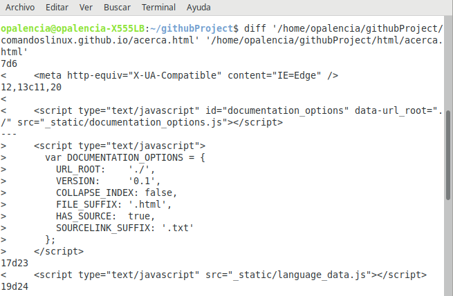

Comparar dos archivos > diff¶
Nombre del comando: diff
Man page online: https://linux.die.net/man/1/diff
Descripción: Comparar archivos linea por linea. Esto es importante para ver si hay diferencias entre dos archivos y visualizar cuáles son esas diferencias. Los archivos tienen que ser del mismo tipo, por ejemplo si se compara archivo1.txt el otro archivo2.txt tiene que ser del tipo txt y así respectivamente. Tambien sirve para comparar el contenido de dos carpetas.
Man page local: $ man diff o $ man diff > diff.txt
Instalado por defecto: Sí, al menos en Linux Mint.
Algunas Opciones:
-q, --brief Reportar sólo cuando los archivos son diferentes. Si son diferentes mostrará sólo la palabra “differ”, sino lo son no mostrará nada.
-s, --report-identical-files Reportar cuando dos archivos son iguales, si lo son dirá el mensaje “are identical”, sino son iguales mostrará las diferencias que existen entre ambos.
Ejemplo 1: $ diff '/home/opalencia/githubProject/comandoslinux.github.io/acerca.html' '/home/opalencia/githubProject/html/acerca.html', en este ejemplo se va a comparar las diferencias entre los archivos acerca.html y acerca.html. Lleva un poco de tiempo familiarizarse con los resultados que se muestran en la consola, pero si se analiza correctamente se puede apreciar en dónde se encuentran las diferencias entre ambos archivos.
Ejemplo 2: $ diff '/home/opalencia/Documentos/carpeta1' '/home/opalencia/Documentos/carpeta2', en este ejemplo se va a comparar el contenido de la carpeta1 y la carpeta2, esto es muy util ya que comparar dos carpetas con la vista puede generar errores y hacerlo así lleva muchos tiempo.